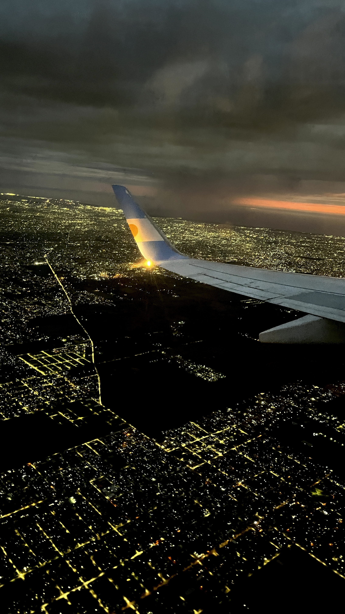
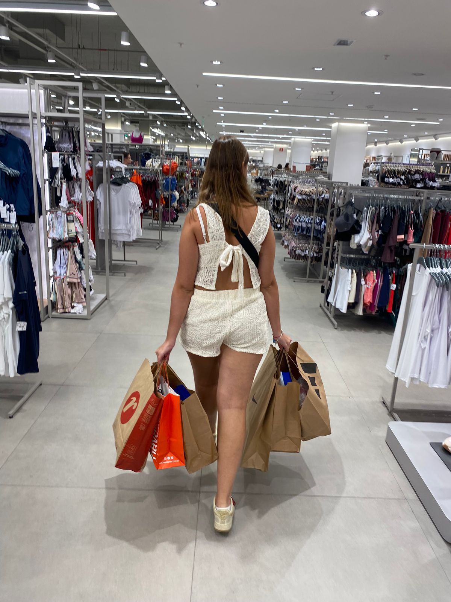

Acerca de mí
Encantado de conocerte
Hola, soy Serena y me encanta viajar y conocer lugares nuevos. Siempre me gustó salir de la rutina, descubrir otras culturas y vivir experiencias distintas en cada viaje. Disfruto mucho capturar esos momentos y guardarlos como recuerdos, pero también compartirlos con otras personas.



Por eso creé mi cuenta de Instagram sere.trips, donde voy subiendo fotos, lugares que visito y algunas recomendaciones. La idea es poder mostrar un poco de cada viaje y, si se puede, motivar a otros a animarse a viajar también. Para mí, viajar es mucho más que ir de un lugar a otro, es una experiencia que te cambia y te deja algo en cada destino.